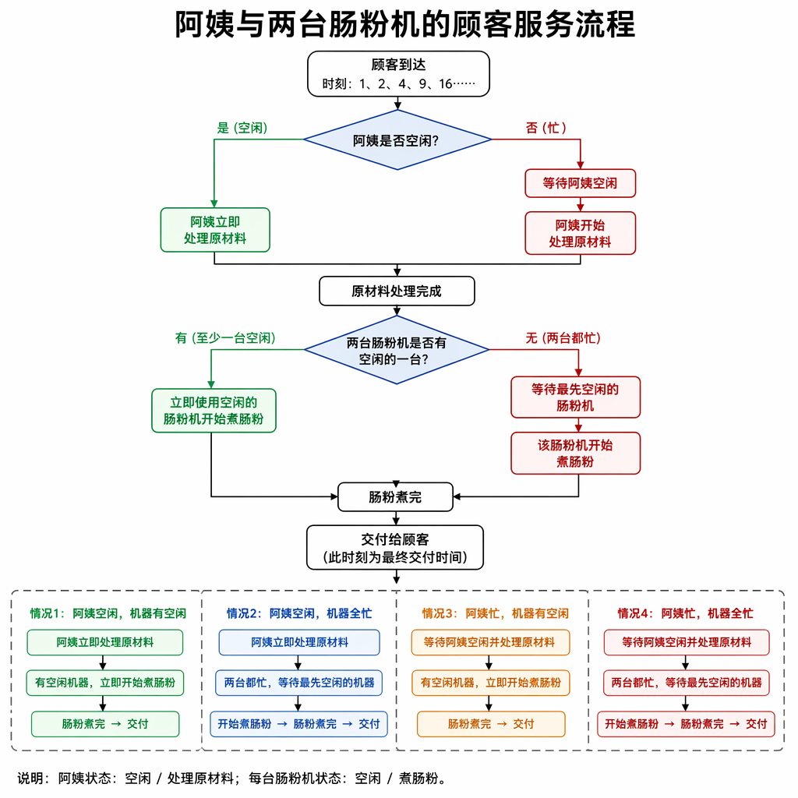

模拟法就是严格按照题目描述的规则，在程序中一步一步地模拟真实过程，从而得到答案的方法。
模拟题目通常具有码量大、操作多、思路繁复的特点。由于它码量大，经常会出现难以查错的情况，如果在考试中写错是相当浪费时间的。
严格按照题目描述的规则，在程序中一步一步地模拟真实过程，从而得到答案的方法。
写模拟题时，遵循以下的建议有可能会提升做题速度：
在动手写代码之前，在草纸上尽可能地写好要实现的流程．
在代码中，尽量把每个部分模块化，写成函数、结构体或类．
对于一些可能重复用到的概念，可以统一转化，方便处理：如，某题给你 "YY-MM-DD 时：分" 把它抽取到一个函数，处理成秒，会减少概念混淆．
调试时分块调试．模块化的好处就是可以方便的单独调某一部分．
写代码的时候一定要思路清晰，不要想到什么写什么，要按照落在纸上的步骤写．
实际上，上述步骤在解决其它类型的题目时也是很有帮助的．
思路：
先弄清楚本题的流程，给定一段比赛信息，需要分别判断在
首先，确定比赛结束的判定方式：有至少一方分数不小于分制分数，且双方分差不小于
并且无论
1bool check(int w,int l,int lim){//w,l:双方分数,lim:分制分数2 return (max(w,l)>=lim&&abs(w-l)>=2);3}
接下来，只需要模拟比赛过程即可。并且
xxxxxxxxxx131void run(string s,int lim){//s:比赛过程,lim:分制2 int w=0,l=0;3 int n=s.size();4 for(int i=0;i<n;i++){//直接模拟,谁赢谁加分5 if(s[i]=='W') w++;6 else l++;7 if(check(w,l,lim)){//比赛如果满足结束条件，输出比分，并清空分数。8 cout<<w<<":"<<l<<"\n";9 w=0,l=0;10 }11 }12 cout<<w<<":"<<l<<"\n";//最后没打完的比赛也要输出分数13}
最后，处理一下字符串，两种分制分别调用即可。
代码：
x1
3using namespace std;4
5using i64=long long;6
7bool check(int w,int l,int lim){8 return (max(w,l)>=lim&&abs(w-l)>=2);9}10
11void run(string s,int lim){12 int w=0,l=0;13 int n=s.size();14 for(int i=0;i<n;i++){15 if(s[i]=='W') w++;16 else l++;17 if(check(w,l,lim)){18 cout<<w<<":"<<l<<"\n";19 w=0,l=0;20 }21 }22
23 cout<<w<<":"<<l<<"\n";24}25
26void Showball(){27 string s="";28 char c;29 while(1){30 cin>>c;31 if(c=='E') break;32 s+=c;33 }34 run(s,11);35 cout<<"\n";36 run(s,21);37}38int main(){39 ios::sync_with_stdio(false);40 cin.tie(nullptr);41 int t=1;42 //cin>>t;43
44 while(t--){45 Showball();46 }47
48 return 0;49}
思路：
同样的，先理清本题的思路。定义了胜负关系，并且双方按照一套固定出手顺序循环出手
xxxxxxxxxx231void run(int i,int j){2 if(i==j) return;3 else if(i==0){4 if(j==2||j==3) ans1++;5 else ans2++;6 }7 else if(i==1){8 if(j==0||j==3) ans1++;9 else ans2++;10 }11 else if(i==2){12 if(j==1||j==4) ans1++;13 else ans2++;14 }15 else if(i==3){16 if(j==2||j==4) ans1++;17 else ans2++;18 }19 else if(i==4){20 if(j==0||j==1) ans1++;21 else ans2++;22 }23}接下来只需要模拟每一轮的出手，带入函数即可。因为是周期性，所以采用
代码：
xxxxxxxxxx571
3using namespace std;4
5using i64=long long;6
7int ans1=0,ans2=0;8int a[210],b[210];9
10void run(int i,int j){11 if(i==j) return;12 else if(i==0){13 if(j==2||j==3) ans1++;14 else ans2++;15 }16 else if(i==1){17 if(j==0||j==3) ans1++;18 else ans2++;19 }20 else if(i==2){21 if(j==1||j==4) ans1++;22 else ans2++;23 }24 else if(i==3){25 if(j==2||j==4) ans1++;26 else ans2++;27 }28 else if(i==4){29 if(j==0||j==1) ans1++;30 else ans2++;31 }32}33
34void Showball(){35 int n,na,nb;36 cin>>n>>na>>nb;37 for(int i=0;i<na;i++) cin>>a[i];38 for(int i=0;i<nb;i++) cin>>b[i];39
40 for(int i=0;i<n;i++){41 run(a[i%na],b[i%nb]);42 }43
44 cout<<ans1<<" "<<ans2;45}46int main(){47 ios::sync_with_stdio(false);48 cin.tie(nullptr);49 int t=1;50 //cin>>t;51
52 while(t--){53 Showball();54 }55
56 return 0;57}
思路：
按照时间线模拟，计算每个顾客肠粉交付的时刻，差值即为用时。

我们只需要记录阿姨和两个肠粉机忙完的时刻，按照以上四种情况进行分类模拟处理即可。
代码：
xxxxxxxxxx371
3using namespace std;4
5using i64=long long;6
7void Showball(){8 i64 t1,t2,n;9 cin>>t1>>t2>>n;10 i64 a=0,b=0,c=0,ans=0;11 for(int i=1;i<=n;i++){12 if(a<=i*i) a=1ll*i*i+t1;//阿姨空闲13 else a+=t1;//阿姨忙完开始处理14 if(b<c){15 if(b<=a) b=a+t2;//肠粉机空闲16 else b+=t2;//肠粉机忙完开始处理17 ans+=b-1ll*i*i;18 }else{19 if(c<=a) c=a+t2;//肠粉机空闲20 else c+=t2;//肠粉机忙完开始处理21 ans+=c-1ll*i*i;22 }23 }24 cout<<ans;25}26int main(){27 ios::sync_with_stdio(false);28 cin.tie(nullptr);29 int t=1;30 //cin>>t;31
32 while(t--){33 Showball();34 }35
36 return 0;37}
思路：
遇到日期问题，我们可以把每个月的天数存在数组中，
这样我们就可以获得每月最大天数
同理如果
代码：
xxxxxxxxxx361
3using namespace std;4
5using i64=long long;6
7const int days[]={0,31,28,31,30,31,30,31,31,30,31,30,31};8
9bool check(int y){10 return (y%4==0&&y%100!=0||y%400==0);11}12void Showball(){13 int y,m,d;14 cin>>y>>m>>d;15 for(int i=1;i<=10000;i++){16 int lim=days[m];17 if(check(y)&&m==2) lim++;18 d++;19 if(d>lim) m++,d=1;20 if(m>12) y++,m=1;21 }22
23 cout<<y<<"-"<<m<<"-"<<d;24}25int main(){26 ios::sync_with_stdio(false);27 cin.tie(nullptr);28 int t=1;29 //cin>>t;30
31 while(t--){32 Showball();33 }34
35 return 0;36}
思路：分四种情况进行处理即可。因为存在符号，数字使用字符串进行读入。
利用 find 函数区分四种情况。
数字的反转需要考虑前导
将字符串转为数字，进行数字拆分，再拼接回去。
直接字符串反转，再处理前导
这里我们以第
去除前导
反转并去除前导
xxxxxxxxxx61string delPre0(string s){2 int i=0,n=s.size();3 reverse(s.begin(),s.end());4 while(i<n-1&&s[i]=='0') i++;5 return s.substr(i);6}反转并去除后导
xxxxxxxxxx61string delSuf0(string s){2 int n=s.size(),i=n-1;3 reverse(s.begin(),s.end());4 while(i>0&&s[i]=='0') i--;5 return s.substr(0,i+1);6}
整数
直接反转并去除前导
分数
从分号分成两部分，两部分反转并去除前导
小数
从小数点分成两部分，前半部分反转并去除前导
百分数
直接反转并去除前导
代码：
xxxxxxxxxx511
3using namespace std;4
5using i64=long long;6
7string delPre0(string s){8 int i=0,n=s.size();9 reverse(s.begin(),s.end());10 while(i<n-1&&s[i]=='0') i++;11 return s.substr(i);12}13
14string delSuf0(string s){15 int n=s.size(),i=n-1;16 reverse(s.begin(),s.end());17 while(i>0&&s[i]=='0') i--;18 return s.substr(0,i+1);19}20
21void Showball(){22 string s;23 cin>>s;24 int n=s.size();25 if(s.find('.')!=s.npos){//小数26 int p=s.find('.');27 string a=s.substr(0,p),b=s.substr(p+1);28 cout<<delPre0(a)<<"."<<delSuf0(b);29 }else if(s.find('/')!=s.npos){//分数30 int p=s.find('/');31 string a=s.substr(0,p),b=s.substr(p+1);32 cout<<delPre0(a)<<"/"<<delPre0(b);33 }else if(s[n-1]=='%'){//百分数34 s=s.substr(0,n-1);35 cout<<delPre0(s)<<"%";36 }else{//整数37 cout<<delPre0(s);38 }39}40int main(){41 ios::sync_with_stdio(false);42 cin.tie(nullptr);43 int t=1;44 //cin>>t;45
46 while(t--){47 Showball();48 }49
50 return 0;51}
思路：
容易发现，每次要填的数的位置只和上一个数的位置有关，因此我们只需要维护好上一个数的位置即可。
剩下的按照题意模拟即可。
代码：
xxxxxxxxxx421
3using namespace std;4
5using i64=long long;6
7int a[50][50];8void Showball(){9 int n;10 cin>>n;11 int x=1,y=(n+1)/2;12 a[x][y]=1;13 for(int i=2;i<=n*n;i++){14 if(x==1&&y!=n) x=n,y++;15 else if(x!=1&&y==n) x--,y=1;16 else if(x==1&&y==n) x++;17 else{18 if(!a[x-1][y+1]) x--,y++;19 else x++;20 }21 a[x][y]=i;22 }23
24 for(int i=1;i<=n;i++){25 for(int j=1;j<=n;j++){26 cout<<a[i][j]<<" ";27 }28 cout<<"\n";29 }30}31int main(){32 ios::sync_with_stdio(false);33 cin.tie(nullptr);34 int t=1;35 //cin>>t;36
37 while(t--){38 Showball();39 }40
41 return 0;42}
对于类似走迷宫，需要遍历周围点的题目，朴素做法就是依次写出周围点的坐标，进行处理。
代码冗长，且不利于拓展。例如当前点的坐标为
我们发现，其实四个坐标之前仅仅只是有微小的差距，那么如果我们把这个差距存储在数组中，即 方向数组。
xxxxxxxxxx21const int dx[]={-1,1,0,0};2const int dy[]={0,0,-1,1};那么，现在其上、下、左、右四个方向分别为
显然，我们可以通过循环进行枚举，即
xxxxxxxxxx31for(int i=0;i<4;i++){2 cout<<x+dx[i]<<" "<<y+dy[i]<<"\n";3}八个方向同理：
xxxxxxxxxx21const int dx[]={1,1,1,0,0,-1,-1,-1};2const int dy[]={-1,0,1,-1,1,-1,0,1};“棋盘马走日”：
xxxxxxxxxx21const int dx[]={1,1,-1,-1,2,2,-2,-2};2const int dy[]={2,-2,2,-2,1,-1,1,-1};
以
xxxxxxxxxx31bool check(int x,int y){2 return 1<=x&&x<=n&&1<=y&&y<=m;3}
思路：
要求出每个 ? 格子周围有多少个 *。那么对于每个 ? 格子，我们使用方向数组枚举周围的所有格子，依次判断是否越界并且是 *。输出即可。
代码：
xxxxxxxxxx511
3using namespace std;4
5using i64=long long;6
7int n,m;8char a[110][110];9const int dx[]={1,1,1,0,0,-1,-1,-1};10const int dy[]={-1,0,1,-1,1,-1,0,1};11
12bool check(int x,int y){13 return 1<=x&&x<=n&&1<=y&&y<=m;14}15
16void Showball(){17 cin>>n>>m;18 for(int i=1;i<=n;i++){19 for(int j=1;j<=m;j++){20 cin>>a[i][j];21 }22 } 23
24 for(int i=1;i<=n;i++){25 for(int j=1;j<=m;j++){26 if(a[i][j]=='*'){27 cout<<"*";28 continue;29 }30 int cnt=0;31 for(int k=0;k<8;k++){32 int x=i+dx[k],y=j+dy[k];33 if(check(x,y)&&a[x][y]=='*') cnt++;34 }35 cout<<cnt;36 }37 cout<<"\n";38 }39}40int main(){41 ios::sync_with_stdio(false);42 cin.tie(nullptr);43 int t=1;44 //cin>>t;45
46 while(t--){47 Showball();48 }49
50 return 0;51}
思路：
本题思路比较朴素，直接模拟路线填数即可。到达边界或者遇到已经填过的数字需要换方向。
本题更能体现 方向数组 的遍历。我们定义变量 dir 表示当前的方向，容易发现，我们更换方向只需要 dir++ 即可。并且由于方向是循环的，直接写为 dir=(dir+1)%4。不再需要特判当前是哪个方向，要更换到哪个方向。
代码：
xxxxxxxxxx441
3using namespace std;4
5using i64=long long;6
7int n;8int a[10][10];9
10bool check(int x,int y){11 return 1<=x&&x<=n&&1<=y&&y<=n&&!a[x][y];12}13
14const int dx[]={0,1,0,-1};15const int dy[]={1,0,-1,0};16
17void Showball(){18 cin>>n;19 int x=1,y=1,dir=0;20 for(int i=1;i<=n*n;i++){21 a[x][y]=i;22 if(!check(x+dx[dir],y+dy[dir])) dir=(dir+1)%4;23 x+=dx[dir],y+=dy[dir];24 }25
26 for(int i=1;i<=n;i++){27 for(int j=1;j<=n;j++){28 cout<<setw(3)<<a[i][j];29 }30 cout<<"\n";31 }32}33int main(){34 ios::sync_with_stdio(false);35 cin.tie(nullptr);36 int t=1;37 //cin>>t;38
39 while(t--){40 Showball();41 }42
43 return 0;44}